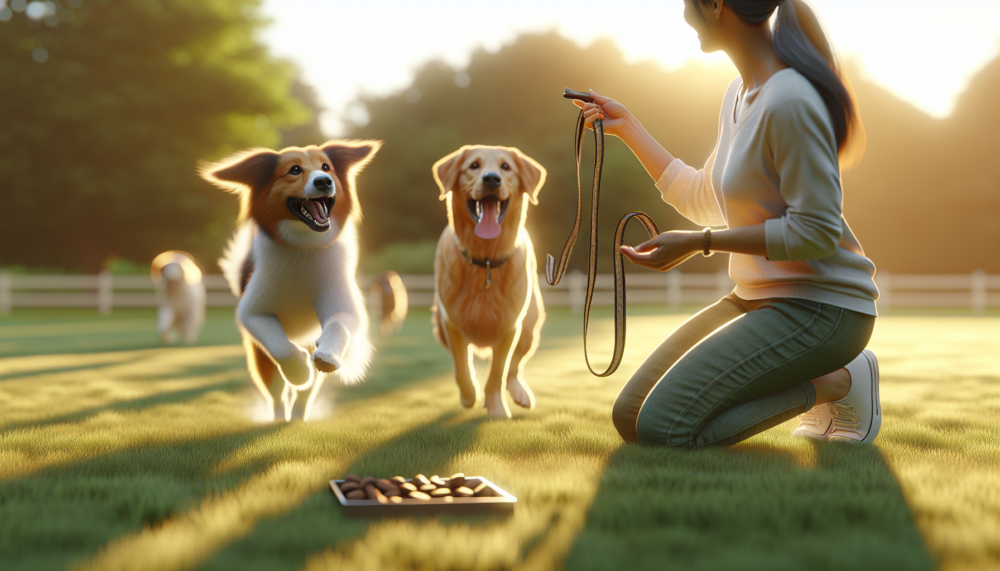

If you could teach your dog just one life-saving skill, recall would be near the top of the list. A dog who comes when called is safer around traffic, wildlife, open doors, other dogs, and everyday distractions. For new puppy parents, rescue adopters, and long-time dog owners alike, reliable recall is one of the most valuable behaviors you can build.
That said, teaching your dog to come when called every time is not about yelling louder, repeating their name ten times, or expecting instant obedience in difficult situations. Strong recall is built through practice, motivation, trust, and smart training progression. The good news is that dogs learn best when training is clear, rewarding, and consistent.
In this guide, you will learn how to teach recall using positive reinforcement, why dogs ignore cues, how to practice step by step, and what mistakes can weaken your results. Whether you are starting with a young puppy or helping a newly adopted rescue dog settle in, these methods will help you create a recall your dog wants to respond to.
Recall is more than a party trick. It is a safety behavior and a relationship behavior. When your dog hears your cue and chooses to return to you, they are showing that being near you is rewarding, predictable, and safe.
A reliable recall can help you:
For rescue dogs, recall training can also support confidence-building. Many adopted dogs are still learning their new name, environment, and routine. Teaching them that coming to you always leads to good things can strengthen your bond quickly.
Dogs repeat behaviors that are reinforced. If your dog comes to you and receives something they love, such as a high-value treat, praise, play, or freedom to return to what they were doing, they are more likely to come again next time. This is the foundation of positive reinforcement.
On the other hand, if your dog comes to you and the result is unpleasant, recall can weaken. Common examples include calling your dog to end playtime, trim nails, leave the park, or receive a scolding. From your dog's perspective, coming when called did not pay off.
Reliable recall also depends on what trainers call the three Ds: distance, duration, and distraction. If your dog can come to you in the living room from six feet away, that does not automatically mean they can do the same at the park with birds flying around and children playing nearby. You need to increase difficulty gradually so your dog can succeed at each stage.
Think of recall as a behavior you proof over time, not a command you teach once.
Pick one clear recall cue and use it consistently. Good options include “come,” “here,” or a cheerful whistle. Some owners prefer a special emergency recall word that is only used when they absolutely need the dog to return immediately. Whatever cue you choose, avoid using it casually if you are not prepared to reinforce it.
Start in a quiet indoor space. Say your cue once in a bright, happy tone, then immediately reward your dog when they move toward you. At first, you can make this easy by stepping backward, crouching down, clapping softly, or opening your arms. Movement often encourages dogs to follow.
Use rewards your dog truly cares about. For many dogs, kibble is not enough for recall training. Try:
The goal is to build an emotional response: when your dog hears the cue, they should think, “Amazing things happen when I go to my person.”
One of the biggest reasons recall fails is that owners move too fast. Your dog may understand the cue at home but not yet in the yard, on a walk, or at a busy park. Start where success is likely, then build up slowly.
A simple progression might look like this:
Use a long training line, often 15 to 30 feet, when practicing outdoors. This gives your dog freedom while keeping them safe and preventing self-rewarding run-offs. Avoid relying on an off-leash test too soon. Every time your dog ignores the cue and keeps running, they rehearse not listening.
Keep sessions short and upbeat. A few minutes of successful practice is more effective than one long session where your dog gets tired or overwhelmed.
In early training, reward every successful recall. This helps your dog understand that responding to the cue is always worth it. Once your dog is consistently successful in multiple environments, you can begin to vary the type of reward, but do not become stingy.
For recall, it is smart to pay well for life. Even adult dogs with strong training benefit from reinforcement. Sometimes give one treat, sometimes a jackpot of several treats, sometimes a toy toss, sometimes praise and release back to play. This unpredictability can make recall more powerful because your dog never knows when a big reward is coming.
Also remember that coming to you should not always end the fun. A great recall game is “come and go play again.” Call your dog, reward them, then release them back to sniff, explore, or play. This teaches your dog that returning to you does not always mean the adventure is over.
Dogs learn best when training feels enjoyable. Recall games are especially helpful for puppies, adolescent dogs, and rescue dogs who may still be building confidence.
Try these simple exercises:
These games teach your dog that coming quickly is fun and profitable. They also help build speed, attention, and a positive emotional association with the recall cue.
Even well-meaning dog owners accidentally weaken recall. If your dog has become inconsistent, one or more of these mistakes may be the reason:
If your dog does not come, do not punish them when they finally arrive. That only teaches them that getting close to you is risky. Instead, lower the difficulty next time, improve your rewards, and set up better practice conditions.
For rescue adopters especially, patience matters. Some dogs need time to develop trust before they respond confidently. Focus on consistency and positive outcomes rather than expecting perfection right away.
An emergency recall is a special cue reserved for urgent situations, such as a gate left open or a dog heading toward danger. Choose a unique word or whistle that you do not use in everyday conversation. Then condition it with exceptionally high-value rewards.
To teach it, say the cue and immediately deliver an incredible payoff: several pieces of roast chicken, a handful of treats, or a favorite toy party. Practice this in easy settings first, and protect the cue by using it rarely. The idea is that your dog develops a reflexive response because that sound has an unusually strong reinforcement history.
Think of it as your dog's safety net, not your everyday recall word.
Teaching your dog to come when called every time is a process, not a one-day lesson. The strongest recall comes from clear communication, gradual practice, and rewards that truly matter to your dog. When you make returning to you consistently positive, your dog learns that listening is worthwhile, even when the world is full of distractions.
Start small, practice often, and celebrate progress. Puppies need repetition. Adolescent dogs need patience. Rescue dogs need trust. But with science-backed training and realistic expectations, most dogs can develop a much more reliable recall than their owners ever thought possible.
If you want better results, remember the essentials: use one clear cue, reward generously, train with a long line, add distractions slowly, and never punish your dog for coming to you. Over time, recall becomes less about control and more about partnership.
Get our full Dog Training eBook series — new titles added weekly.